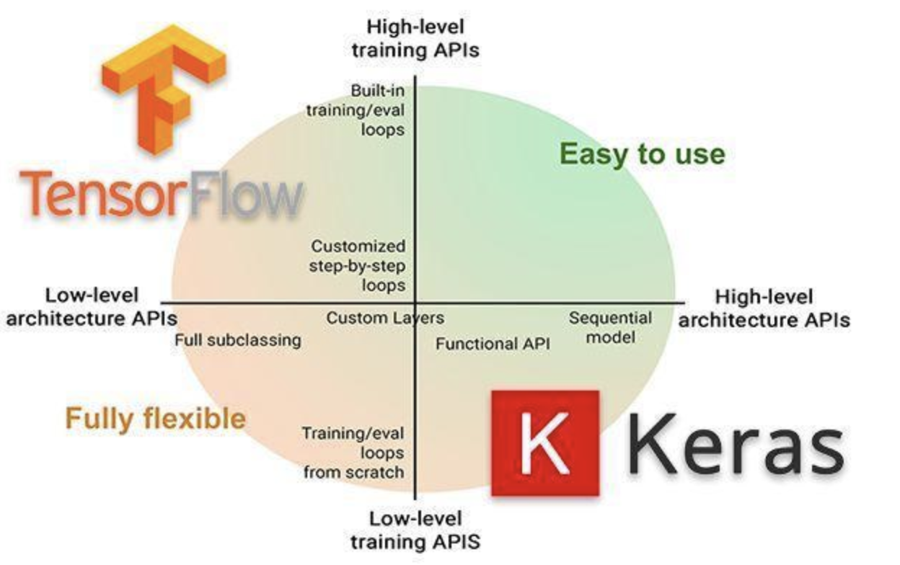

深度学习框架-TensorFlow
学习目标
- 了解Tensorflow2.0框架的用途及流程
- 知道tf2.0的张量及其操作
- 知道tf.keras中的相关模块及常用方法

1.1 TensorFlow介绍
深度学习框架TensorFlow一经发布，就受到了广泛的关注，并在计算机视觉、音频处理、推荐系统和自然语言处理等场景下都被大面积推广使用，现在已发布2.3.0版本，接下来我们深入浅出的介绍Tensorflow的相关应用。
TensorFlow的依赖视图如下所示：
- TF托管在github平台，有google groups和contributors共同维护。
- TF提供了丰富的深度学习相关的API，支持Python和C/C++接口。
- TF提供了可视化分析工具Tensorboard，方便分析和调整模型。
- TF支持Linux平台，Windows平台，Mac平台，甚至手机移动设备等各种平台。
TensorFlow 2.0 将专注于简单性和易用性，工作流程如下所示：

1、使用tf.data加载数据。 使用tf.data实例化读取训练数据和测试数据
2、模型的建立与调试： 使用动态图模式 Eager Execution 和著名的神经网络高层 API 框架 Keras，结合可视化工具 TensorBoard，简易、快速地建立和调试模型；
3、模型的训练： 支持 CPU / 单 GPU / 单机多卡 GPU / 多机集群 / TPU 训练模型，充分利用海量数据和计算资源进行高效训练；
4、预训练模型调用： 通过 TensorFlow Hub，可以方便地调用预训练完毕的已有成熟模型。
5、模型的部署： 通过 TensorFlow Serving、TensorFlow Lite、TensorFlow.js 等组件，可以将TensorFlow 模型部署到服务器、移动端、嵌入式端等多种使用场景；
1.2 TensorFlow的安装
安装 TensorFlow在64 位系统上测试这些系统支持 TensorFlow：
- Ubuntu 16.04 或更高版本
- Windows 7 或更高版本
- macOS 10.12.6 (Sierra) 或更高版本（不支持 GPU）
进入虚拟环境当中再安装。推荐使用anoconda进行安装
- 1、非GPU版本安装
ubuntu安装
pip install tensorflow==2.3.0 -i https://pypi.tuna.tsinghua.edu.cn/simple
- 2、GPU版本安装
pip install tensorflow-gpu==2.3.0 -i https://pypi.tuna.tsinghua.edu.cn/simple
注：如果需要下载GPU版本的（TensorFlow只提供windows和linux版本的，没有Macos版本的）。
1.3 张量及其操作
1.3.1 张量Tensor
张量是一个多维数组。 与NumPy ndarray对象类似，tf.Tensor对象也具有数据类型和形状。如下图所示：
此外，tf.Tensors可以保留在GPU中。 TensorFlow提供了丰富的操作库（tf.add，tf.matmul，tf.linalg.inv等），它们使用和生成tf.Tensor。在进行张量操作之前先导入相应的工具包：
import tensorflow as tf
import numpy as np
1.基本方法
首先让我们创建基础的张量：
# 创建int32类型的0维张量，即标量
rank_0_tensor = tf.constant(4)
print(rank_0_tensor)
# 创建float32类型的1维张量
rank_1_tensor = tf.constant([2.0, 3.0, 4.0])
print(rank_1_tensor)
# 创建float16类型的二维张量
rank_2_tensor = tf.constant([[1, 2],
[3, 4],
[5, 6]], dtype=tf.float16)
print(rank_2_tensor)
输出结果为：
tf.Tensor(4, shape=(), dtype=int32)
tf.Tensor([2. 3. 4.], shape=(3,), dtype=float32)
tf.Tensor(
[[1. 2.]
[3. 4.]
[5. 6.]], shape=(3, 2), dtype=float16)

我们也可以创建更高维的张量：
# 创建float32类型的张量
rank_3_tensor = tf.constant([
[[0, 1, 2, 3, 4],
[5, 6, 7, 8, 9]],
[[10, 11, 12, 13, 14],
[15, 16, 17, 18, 19]],
[[20, 21, 22, 23, 24],
[25, 26, 27, 28, 29]],])
print(rank_3_tensor)
该输出结果我们有更多的方式将其展示出来：

2.转换成numpy
我们可将张量转换为numpy中的ndarray的形式，转换方法有两种，以张量rank_2_tensor为例：
- np.array
np.array(rank_2_tensor)
Tensor.numpy()
rank_2_tensor.numpy()
3.常用函数
我们可以对张量做一些基本的数学运算，包括加法、元素乘法和矩阵乘法等：
# 定义张量a和b
a = tf.constant([[1, 2],
[3, 4]])
b = tf.constant([[1, 1],
[1, 1]])
print(tf.add(a, b), "\n") # 计算张量的和
print(tf.multiply(a, b), "\n") # 计算张量的元素乘法
print(tf.matmul(a, b), "\n") # 计算乘法
输出结果为：
tf.Tensor(
[[2 3]
[4 5]], shape=(2, 2), dtype=int32)
tf.Tensor(
[[1 2]
[3 4]], shape=(2, 2), dtype=int32)
tf.Tensor(
[[3 3]
[7 7]], shape=(2, 2), dtype=int32)
另外张量也可用于各种聚合运算：
tf.reduce_sum() # 求和
tf.reduce_mean() # 平均值
tf.reduce_max() # 最大值
tf.reduce_min() # 最小值
tf.argmax() # 最大值的索引
tf.argmin() # 最小值的索引
例如：
c = tf.constant([[4.0, 5.0], [10.0, 1.0]])
# 最大值
print(tf.reduce_max(c))
# 最大值索引
print(tf.argmax(c))
# 计算均值
print(tf.reduce_mean(c))
输出为：
tf.Tensor(10.0, shape=(), dtype=float32)
tf.Tensor([1 0], shape=(2,), dtype=int64)
tf.Tensor(5.0, shape=(), dtype=float32)
4.变量
变量是一种特殊的张量，形状是不可变，但可以更改其中的参数。定义时的方法是：
my_variable = tf.Variable([[1.0, 2.0], [3.0, 4.0]])
我们也可以获取它的形状，类型及转换为ndarray:
print("Shape: ",my_variable.shape)
print("DType: ",my_variable.dtype)
print("As NumPy: ", my_variable.numpy)
输出为：
Shape: (2, 2)
DType: <dtype: 'float32'>
As NumPy: <bound method BaseResourceVariable.numpy of <tf.Variable 'Variable:0' shape=(2, 2) dtype=float32, numpy=
array([[1., 2.],
[3., 4.]], dtype=float32)>>
1.4 tf.keras介绍
tf.keras是TensorFlow 2.0的高阶API接口，为TensorFlow的代码提供了新的风格和设计模式，大大提升了TF代码的简洁性和复用性，官方也推荐使用tf.keras来进行模型设计和开发。

1.4.1 常用模块
tf.keras中常用模块如下表所示：
| 模块 | 概述 |
|---|---|
| activations | 激活函数 |
| applications | 预训练网络模块 |
| Callbacks | 在模型训练期间被调用 |
| datasets | tf.keras数据集模块，包括boston_housing，cifar10，fashion_mnist，imdb ，mnist |
| layers | Keras层API |
| losses | 各种损失函数 |
| metircs | 各种评价指标 |
| models | 模型创建模块，以及与模型相关的API |
| optimizers | 优化方法 |
| preprocessing | Keras数据的预处理模块 |
| regularizers | 正则化，L1,L2等 |
| utils | 辅助功能实现 |
1.4.2 常用方法
深度学习实现的主要流程：1.数据获取，2，数据处理，3.模型创建与训练，4 模型测试与评估，5.模型预测
1.导入tf.keras
使用 tf.keras，首先需要在代码开始时导入tf.keras
import tensorflow as tf
from tensorflow import keras
2.数据输入
对于小的数据集，可以直接使用numpy格式的数据进行训练、评估模型，对于大型数据集或者要进行跨设备训练时使用tf.data.datasets来进行数据输入。
3.模型构建
- 简单模型使用Sequential进行构建
- 复杂模型使用函数式编程来构建
- 自定义layers
4.训练与评估
- 配置训练过程：
# 配置优化方法，损失函数和评价指标
model.compile(optimizer=tf.train.AdamOptimizer(0.001),
loss='categorical_crossentropy',
metrics=['accuracy'])
模型训练
# 指明训练数据集，训练epoch,批次大小和验证集数据 model.fit/fit_generator(dataset, epochs=10, batch_size=3, validation_data=val_dataset, )模型评估
# 指明评估数据集和批次大小 model.evaluate(x, y, batch_size=32)模型预测
# 对新的样本进行预测 model.predict(x, batch_size=32)
5.回调函数（callbacks）
回调函数用在模型训练过程中，来控制模型训练行为，可以自定义回调函数，也可使用tf.keras.callbacks 内置的 callback ：
ModelCheckpoint：定期保存 checkpoints。 LearningRateScheduler：动态改变学习速率。 EarlyStopping：当验证集上的性能不再提高时，终止训练。 TensorBoard：使用 TensorBoard 监测模型的状态。
6.模型的保存和恢复
- 只保存参数
# 只保存模型的权重
model.save_weights('./my_model')
# 加载模型的权重
model.load_weights('my_model')
- 保存整个模型
# 保存模型架构与权重在h5文件中
model.save('my_model.h5')
# 加载模型：包括架构和对应的权重
model = keras.models.load_model('my_model.h5')
总结
了解Tensorflow2.0框架的用途及流程
1.使用tf.data加载数据
2、模型的建立与调试
3、模型的训练
4、预训练模型调用
5、模型的部署
知道tf2.0的张量及其操作
张量是多维数组。 1、创建方法：tf.constant() 2、转换为numpy: np.array()或tensor.asnumpy() 3、常用函数：加法，乘法，及各种聚合运算 4、变量：tf.Variable()知道tf.keras中的相关模块及常用方法
常用模块：models,losses,application等 常用方法： 1、导入tf.keras 2、数据输入 3、模型构建 4、训练与评估 5、回调函数 6、模型的保存与恢复